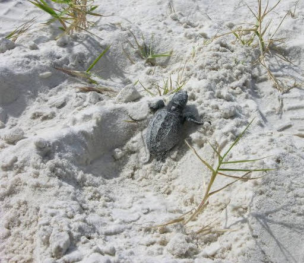
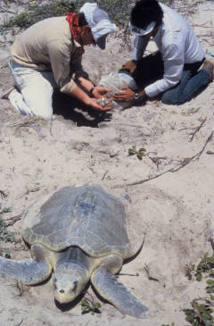
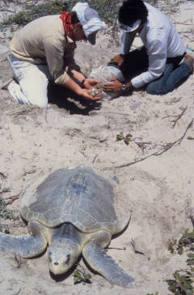

Kemp's Ridley Sea Turtle
 (Photos from U.S. Fish and Wildlife service)
(Photos from U.S. Fish and Wildlife service)Description
The Kemp's Ridley sea turtle grows to be about 61 cm in shell length and up to about 45 kg. These measurements makes it the smallest sea turtle species. The oval shaped olive-gray shell is as long as it is wide. The head is a triangle shape with a curved beak (Services).
Habitat and Location
In North Carolina it can be found in Beaufort, Brunswick, Carteret, Currituck, Dare, Hyde, and Pamlico counties. However, they also live in Alabama, Florida, Georgia, Louisiana, Mississippi, South Carolina, Texas, and Virginia (Services).
This sea turtle can be found in waters on or around the sea bed where it feeds on benthic organisms such as crabs. During nesting season they come up to the beaches to lay their eggs (Services).
Reasons For Endangerment
The problem with estimating the true damage done to the Kemp's Ridley's population is that we don't have a good understanding of their historical population size, however there was a clear decline between the late 1960's and 1990's. During this time the harvesting of their eggs were commercialized and at the same time the shrimping industry was expanding and catching them as a part of their by catch (Bevan).References
Bevan, E., et al. Ecosphere (Washington, D.C): Estimating the Historic Size and Current Status of the Kemp's Ridley Sea Turtle ( ) Population. 7 Vol. Ecological Society of America, 03/2016. Web. 27 Oct. 2016.
Service, U.S. Fish and Wildlife. "Species Profile for Kemp's Ridley Sea Turtle (Lepidochelys Kempii)." Species Profile for Kemp's Ridley Sea Turtle (Lepidochelys Kempii). U.S. Fish & Wildlife Service, n.d. Web. 27 Oct. 2016.